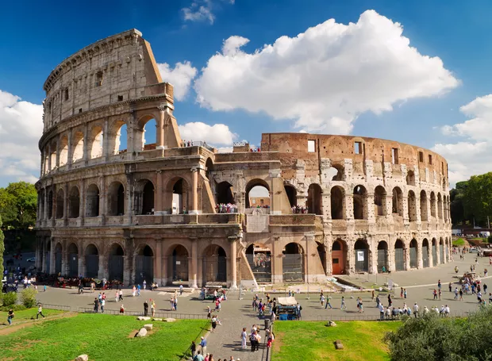

Roma
Coliseu
Coliseu, também conhecido como Anfiteatro Flaviano, é um anfiteatro oval localizado no centro da cidade de Roma, capital da Itália. Construído com tijolos revestidos de argamassa e areia, e originalmente cobertos com travertino é o maior anfiteatro já construído e está situado a leste do Fórum Romano.
Fontana Di Trevi

A Fontana di Trevi é a maior e mais ambiciosa construção de fontes barrocas da Itália e está localizada no rione Trevi, em Roma. A fonte está encostada na fachada do Palazzo Poli.
Museus Vaticanos
Os Museus Vaticanos (Musei Vaticani) constituem um conglomerado de renomadas instituições ... Símbolo do Museu do Vaticano. A maior parte de suas coleções estão abrigadas no Palácio dos Museus Vaticanos e na Pinacoteca Vaticana.